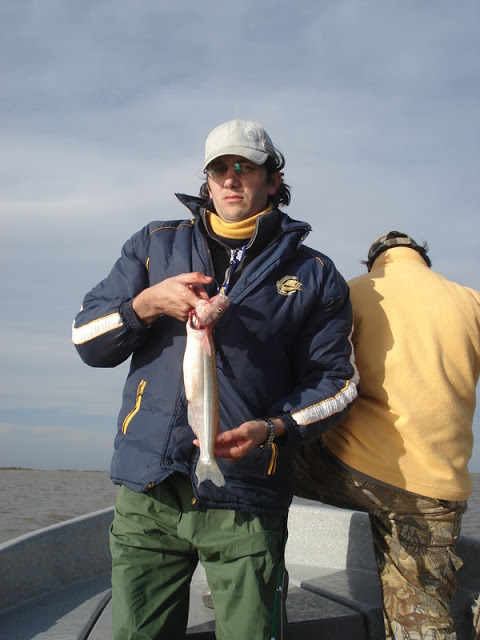
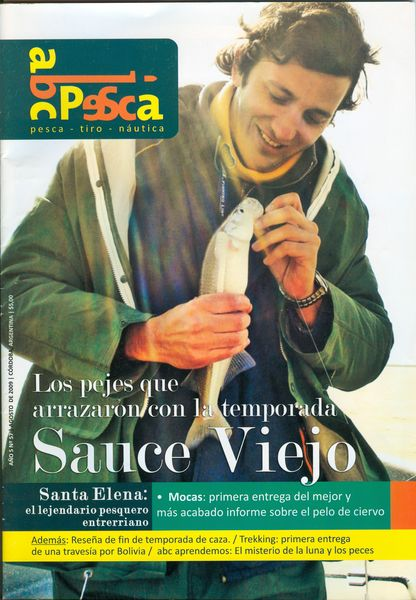
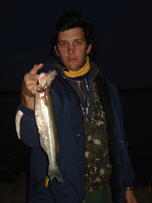

Site de Pesca

Pro Anglers
Pro Anglers
Todo comenzó cuando un amigo de mi primo, web-beando por internet, descubre a Facundo Otero, un amigo en común, en una nota que realizamos en septiembre del año pasado, en Sauce Viejo, y entonces les recomienda a sus amigos que entren a abcpesca.com . Y lean la nota con la cual se murió de risa de la borrachera de Facundo. A los pocos días me llama Tomy Moyano, mi primo, preguntándome datos del lugar, aunque más de la noche de Santa Fe que de la pesca en sí. Entonces le recomendé que vayan a este lugar no solo por la pesca, sino también por sus personajes, su comida, los precios, sus noches, casino y demás. Así es que me preguntó toda una semana sobre todo por la joda. Lo llamé a Darío de “Paraje Costero” para preguntarle como venía el pique. “de buena a regular…más tirando a regular” me contestó.
Lo llamé a Tomás diciéndole de que a pesar que la pesca no era muy buena, para mí era una de las zonas que más estaba rindiendo, y que fueran para allá. Me invitan a su excursión por aguas Santafesinas, a la cual el día anterior al viaje me bajo por motivos que hasta el día de hoy, todavía no logro descifrar. Partieron para Sauce, 10 monstruos. A la noche, me llama Darío, quien los esperaba con un asado, contándome que los chicos ya habían llegado y que solamente habían bajado del auto las botellas de alcohol.
Tengo que explayarme un poco para que entiendan más la situación. Ninguno de los 10, había agarrado en su vida una caña, es más, me atrevo a decir que la única caña que conocen es la Legui. A la mañana siguiente, a eso de las 11 me llama Pato contándome que habían sacado un Dorado de 9 Kilos, a lo que le respondí que no le creía, que esos tamaños no existían por esa zona. Me pide una recomendación para la pesca a lo cual le digo que sigan pescando variada, que todos saquen amarillos y después a la hora del almuerzo pesquen mojarras y prueben a la tarde si hay algún doradito dando vueltas .
Durante todo el día espere alguna llamada y nada de nada. Bueno pensaba por mis adentros, no les debe haber ido bien. Cuando mientras estaba divagando con su supuesta pesca me llama Darío comentándome lo emocionado, trastornado y conmocionado que estaba. Contándome que mis amigos, los cuales ni sabían tirar la caña, que los mismos guías tenían que encarnarles la tripa de pollo, la posta de mojarra, les tenían que tirar la caña porque no sabían ni lanzar un plomo del 60. En fin, que habían sacado 72 pejerrey que variaban entre 1 kilo y kilo y medio. Nahhhh le conteste!!! Seeee, mira vos si esos mismos borrachos, con líneas para amarillos, usando cañas garrotes, con anzuelos pata larga van a sacar 72 matungos de esos tamaños y en Sauce Viejo. Si si, bueno bueno proseguía yo. Mentiroso le decía, ni colorado te pones para mentir. A todo esto a Darío ya se le empezaba acabar la paciencia por mi falta de creencia en sus palabras.
Ustedes sumen todo, es mas, me creerían cuando les digo que llamo a mi primo y me dice lo siguiente: - “Ferni, estamos sacando esas carnaditas chiquitas, esos pescaditos para ir a pescar” JaJa. Como me reía. Mojarritas dirás,¿ no? Bueno, si eso me dice. Súmenle que el guía les tiraba las cañas para evitar no solamente enredo sino que tiraran arriba de los camalotes. Jaja. Y esa llamada cargosa de Dorado de 9 Kg. a la mañana. Nahh, imposible de creer. Estos se habían complotado con mi amigo Darío para hacerme una joda.
A los pocos minutos me llama Darío nuevamente. Fer, en serio, los chicos sacaron 72 pejes de ese tamaño, no lo puedo creer.
Obvio que no lo vas a poder creer le contesto, si ni vos los viste. A eso se siente que en el fondo, Leo, el guía le dice, pasame el celu a mí, que el Fer me cree. Si, ta fácil, justo a vos. El Leo me dice, Fer, vos en mi confías, sabes que yo nunca te mentí. SI Leo, pero esto es una joda. Así prosiguió la charla por un largo rato. Para esa altura del partido mi cabeza carburaba a full. Que porque no había ido, que ya sabia que tenia que ir, que soy un salame y todos los epítetos imaginables. Lo llamé a Darío para pispiar un poco el tema, ver si continuaban con la joda o tratar de averiguar si era verdad. Darío, si es verdad reservame una cabaña con una lancha que voy la semana que viene con 3 amigos mas. El día domingo a la noche, ni bien cayó la noche, lo llamé a mi primo para ver si había llegado y me fui a ver los pejes. Mi cara cuando los vi, no lo podía creer. Era todo cierto, no me habían mentido. Así que saque fotos y ni bien llegue a casa empecé a mandar mails a algunos amigos contando sobre dicha hazaña de estos cordobeses en Sauce y que la semana siguiente me iba para esos lugares con 3 plazas disponibles en el golcito. La verdad que esa noche no pegué un ojo, no lo podía creer.
No llego asomar el sol a la mañana siguiente que ya me habían confirmado dos, Raúl Sagristani y Martín Arguello, solo restaba el cuarto. Lo llamo a Miguel, del Biguá y me contesta que estaría encantado de ir pero llegaba de otros lugares y tenia que ver si le daban permiso (Bruja Obliga). Al final, entre idas y vueltas se sumaron también Miguel Leonelli, Gon Gutierrez y Fran Abona. Toda la semana llamando a Darío preguntándole como venia el pique, que nosotros íbamos a Sauce a buscar esos Pejes, que no nos interesaba la variada sino los Matungos. Matungos en Sauce, cosa que nunca se sacó esa cantidad y calidad. Nosotros con Fran y Gon salimos el viernes temprano, pasado el mediodía y los trabajadores en serio recién por la tarde noche. Pero tuvieron su merecimiento, los estaba esperando un espectacular asado, de esos que comes con grandes amigos en momentos contados, regados con unos muy ricos vinos traídos por Martín. Charlamos un poco obviamente de pesca y de los equipos que usaríamos el día siguiente. Todos terminamos usando unas líneas preparadas por Miguel.
Sábado bien temprano, esperando en la costa que Leo se levante, se despegue la almohada de la cara y nos pase a buscar con otro guía en los truckers. Rogando que el pescado siguiera adonde lo habían enganchado una semana atrás. Repartimos las 400 mojarras que habíamos llevado de Córdoba. Nos teníamos fe, en realidad más que fe, eran diminutas esas mojarras y tendríamos que encarnar hasta con 3 para que se notaran.
Ni bien tiramos anclas, yo ya le estaba apostando al guía que esta vez, en los pejes le iba a ganar. Claro, ya estaba cansado que cada vez q iba a Sauce me pintara la cara con los Amarillos. Mientras tanto, veo que Miguel ya tenía las dos cañas tiradas, ese tipo si que sabe de velocidad. Nadie despegaba el dedo del nylon, había viento. El ambiente estaba tenso, estábamos todos con las expectativas de ver si seguían ahí los peces, si en lo largo de una semana no se habrían ido. Al cabo de unos minutos creo que fui el que se llevo la primera pieza, un lindo matungo. No alcancé a meter el peje al bote que Gonza traía otro. Cardumen pensamos. Desde nuestro bote se veía que tanto Miguel como Raúl y Martín obtenían sus piezas ya. Todos usábamos cañas para variada. Pero yo quería pescar con mi cañita de peje y forzarla al máximo. Que si metía doblete y se me quebraba, quebraría una caña con gusto, con un doblete de matungo. Que más podría pedir. Cuando de repente otra vez meto cañazo, otra vez lo mismo, ni bien llego a meterlo al bote que Gonzalo caña de nuevo. EL pescado pasaba y volvía, había que agarrarlo. A lo largo de la mañana pescamos todos parejos, salvo Miguel que nos lleno de escamas.
Cerca del mediodía nos llamo Andrés de Tiempo Libre, dueño de los truckers avisándonos que el almuerzo estaba listo. Al llegar al rancho, todas nuestras caras demostraban lo bien que nos estaba yendo. Andrés nos agasajó con unos amarillos fritos y después con unos sábalos a la parilla. Mientras algunos bajaban la comida con un puchito, algunos tomábamos sol, otros pescaban mojarrones para la segunda etapa. Nos llenamos de inmensas mojarras, presagiando que podríamos sacar mas y grandes encima.
Volvimos en busca de nuevos desafíos. Ya estaba yo con mi cañita con puntera de concurso esperando clavar alguna otra pieza. Leo (el guía) venía para atrás en la competencia, cómodo lejos. Claro, nunca en su vida había pescado pejerrey. Por fin podía ganarle y gastarlo alguna vez. Le prestamos líneas de fondo para que intentara pescar. Jaja. Ni bien llegamos, se despertó Francisco y sacó tres matungazos, una tras otro, sin darnos tiempo siquiera a sacarle una foto. Después de eso, no pasó nada de nada por un largo rato y para colmo vemos que en el otro bote, tanto Raúl, como Martín y Miguel metían cañazos a más no poder.
En una de esas, cansado de que nada pasara recogí la línea y la quise tirar para otro sector, pero ni bien lance, el nylon se me enrosco en la puntera y me lo cortó, yendo a parar línea, plomo, anzuelo y todo al agua. Gracias a Dios que tenía armada otra caña y pude tirar. Al cabo de otros minutos y que se agotara mi poca paciencia, empecé a dar pequeños golpecitos y recoger un poco la línea cuando de repente sentí algo muy pesado. Jojo, reí por mis adentros, tuvo suerte mi proyecto de técnica. Doblete parecía, venía muy pesada, la puntera había llegado a su máxima curvatura. Cuando estaba cerca del bote le digo al guía que había enganchado con alguien, a lo cual el Leo me contesta que si, pero que era mi línea, la anterior. Cosa increíble, la traía del mosquetón abierto, sin plomo, con la suerte que el plomo estaba enganchado en el anzuelo y venia un hermoso ejemplar de peje enganchado a ella. Gonzalo me puteaba por la suerte, el Fran ni hablar, se reían de mis dotes de pescador. Yo tampoco lo podía creer, pero bueno, son esas cosas que varias veces nos da la pesca. Mientras tanto por el otro bote pescaban con dos cañas cada uno y clavaban con las dos, nosotros ni con una teníamos suerte alguna. Así por unos minutos más hasta que casi fue una orden que le di al Leo para que nos pegara lo más cerca posible de los demás. Nos acercamos bastante y la cosa cambió un poco, ellos dejaron de pescar tanto y nosotros pudimos empezar a pesca algo. Ahí decidí romper mi caña con un lindo amarillo, acuérdense que estaba preparada para peje y chico del San Roque, y si se llegaba a prender un amarillito peleador, corría el riesgo de romperla en pedazos, pero me daría el gusto. No tuve suerte, cambie de mojarra a tripa de pollo y no, nada. Así transcurrió toda la tarde. Nuestro bote dio por finalizada la pesca cuando el sol empezaba a esconderse y los demás se quedaron un ratito más. Ahora venia la otra parte, la limpieza de los pescados en las cabañas. Que parte aburrida, pero divertida ya que estábamos todos alrededor de la pileta limpiándolos y contando las sensaciones de la excelente pesca que nos había entregado el Coronda, excepto Francisco cabe aclarar, que el tipo se había metido a bañarse y como salió todo limpio el tipo, no pudo ayudar en la limpieza. Contamos cien y chirolas más de pejes, todos de excelentes tamaños, de promedio de un kilo de peso, y algunos que otros amarillos.
.jpg)
Nos pegamos un baño y queríamos festejar toda esa hermosa pesca. Salimos a comer, pero al llegar a un comedor de Sauce, constatamos que estaba todo repleto. Así que Miguel tuvo la idea de llevarnos a un restauran de Santo Tome. Un espectáculo, morfamos como dioses, desde Bife de Lomos con papas Nuase (se como se pronuncia, pero no como se escribe), milanesas de pollo a la pizza, algunas cervezas bien heladas, gaseosas, unos flanes inmensos y caseros. Todo un espectáculo. Pagamos la cuenta y la felicidad para mí por lo menos fue doble y en esto me quiero detener. Otro placer fue el saber el valor de ella. Un regalo, en realidad capaz que no es un regalo, y si mas acorde a los salarios que uno tiene por estos días. Hago hincapié en que no es como varios pesqueros que me llegan reclamos de lo caros que están, de lo mal que tratan al pescador y de las pocas opciones que hay. Que la pesca embarcada se esta convirtiendo de a poco en elitista. Bueno, yo les digo, quédense tranquilos, todavía, por lo menos en esta zona quedan excelentes pesqueros, con gente que lo tratan a uno como si fuera de la familia y a un precio totalmente accesible. No quiero terminar la nota sin antes agradecer a todos mis compañeros de esta aventura, a Darío dueño de Paraje Costero por su buena onda, a Andrés de Tiempo Libre y párrafo aparte se merece Leo (el guía) que acaba de ser padre de 2 hermosas nenas. Mis más sinceras felicitaciones para él. Por último, otra felicitación para Joaco Marull, quien fue el que sacó el peje más grande (57 cm) de la primera tanda de Cordobeses y que hoy, en el día de la fecha se acaba de recibir de Arquitecto. Para todos ellos mi más sincero saludo.